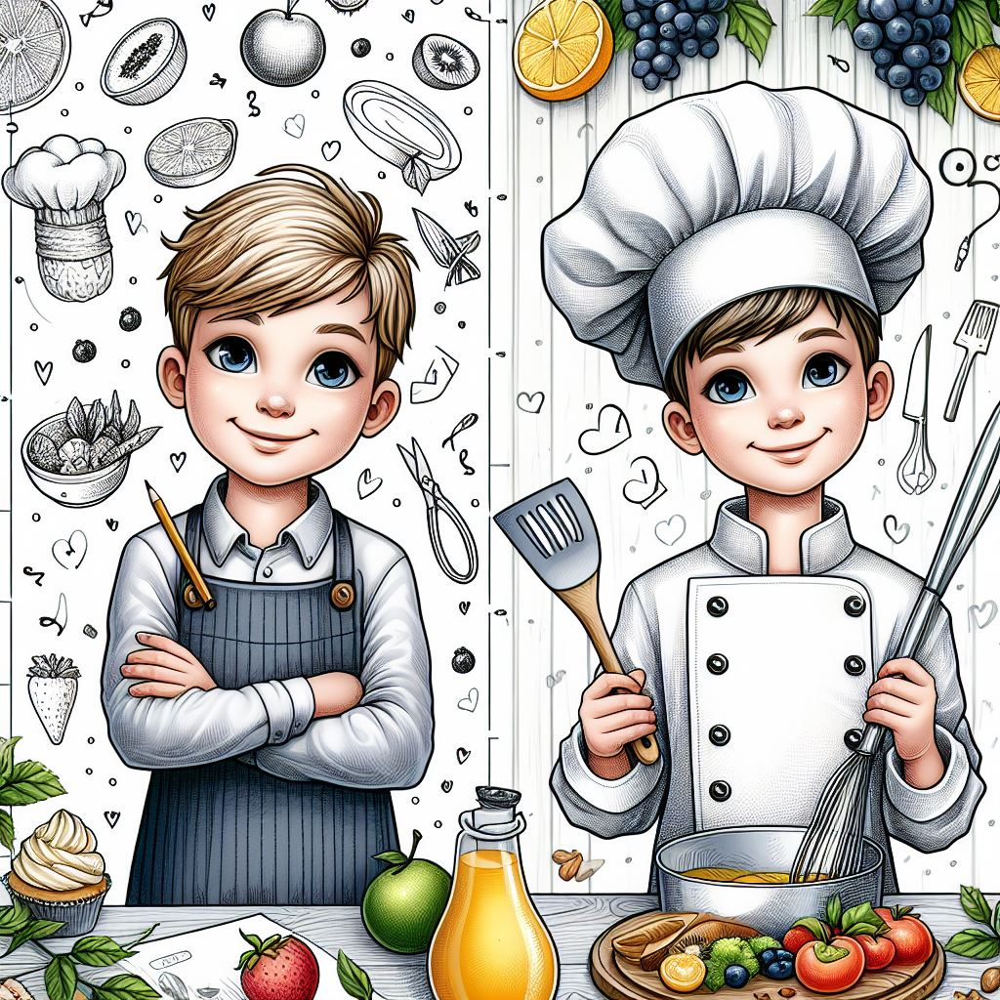
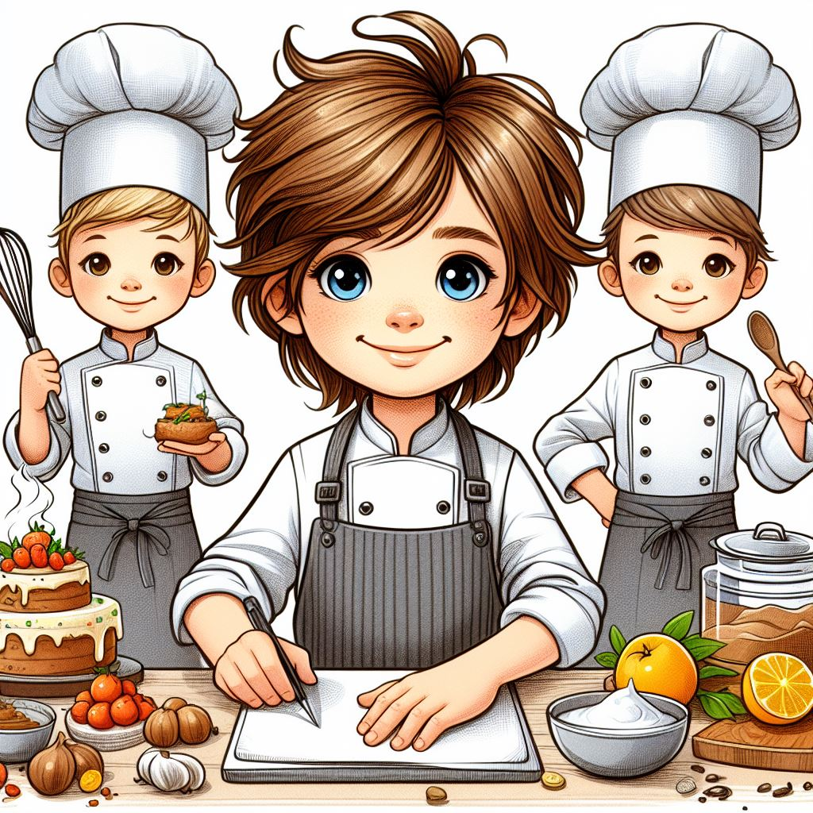
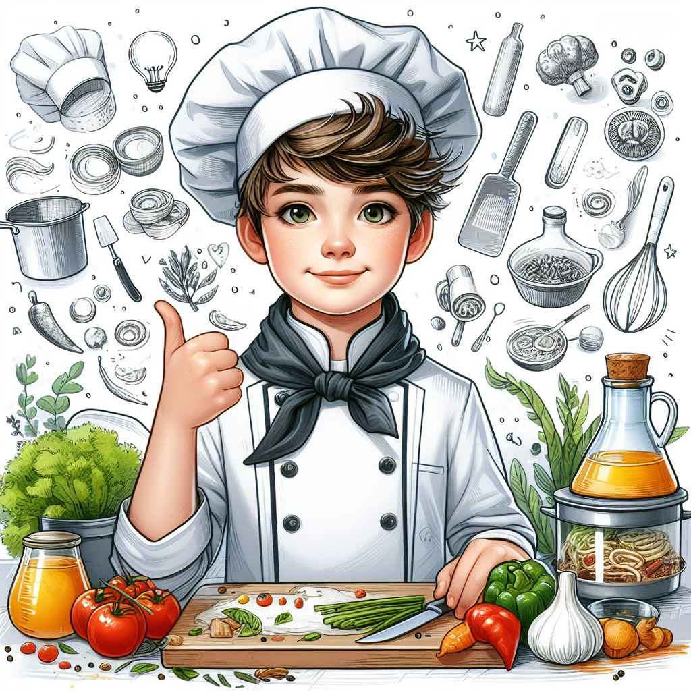

Гості кулінарного майстер-класу дізнаються тонкощі підбору якісних інгрідієнтів, правильність поєднань смаків та ароматів, а також секрети приготування та обробки продуктів.

Кулінарні майстер-класи
Кулінарні майстер-клас для дітей – це не просто заняття на кухні.
Це справжня кулінарна пригода, де діти занурюються в світ смаку, творчості та навчання.
Кожне заняття – це можливість відкрити новий кулінарний горизонт та вивчити тонкощі готування.

Що є в Кулінарні майстер-класи
Практичний акцент: позашкільні заняття спрямовані на практичне навчання. Діти не лише чують теорію, але і відразу застосовують отримані знання в кулінарних вправах. Це сприяє кращому засвоєнню матеріалу та розвитку практичних навичок.
Творчий підхід: у ЗЗСО часто бракує можливості розвивати творчість.

Розподіл завдань
Розподіл завдань: навчайте дітей розподіляти завдання та співпрацювати, щоб забезпечити ефективний процес готування;
Експериментування зі смаками: заохочуйте дітей експериментувати зі смаками та створювати свої унікальні комбінації;
Контроль температури: навчіть дітей правильно використовувати тепло та холод при готуванні для досягнення оптимального результату;